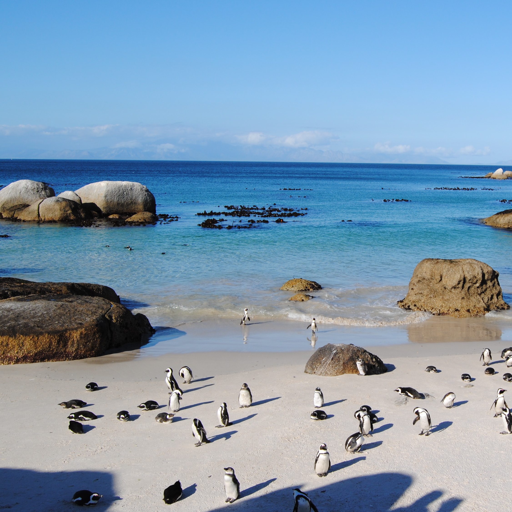
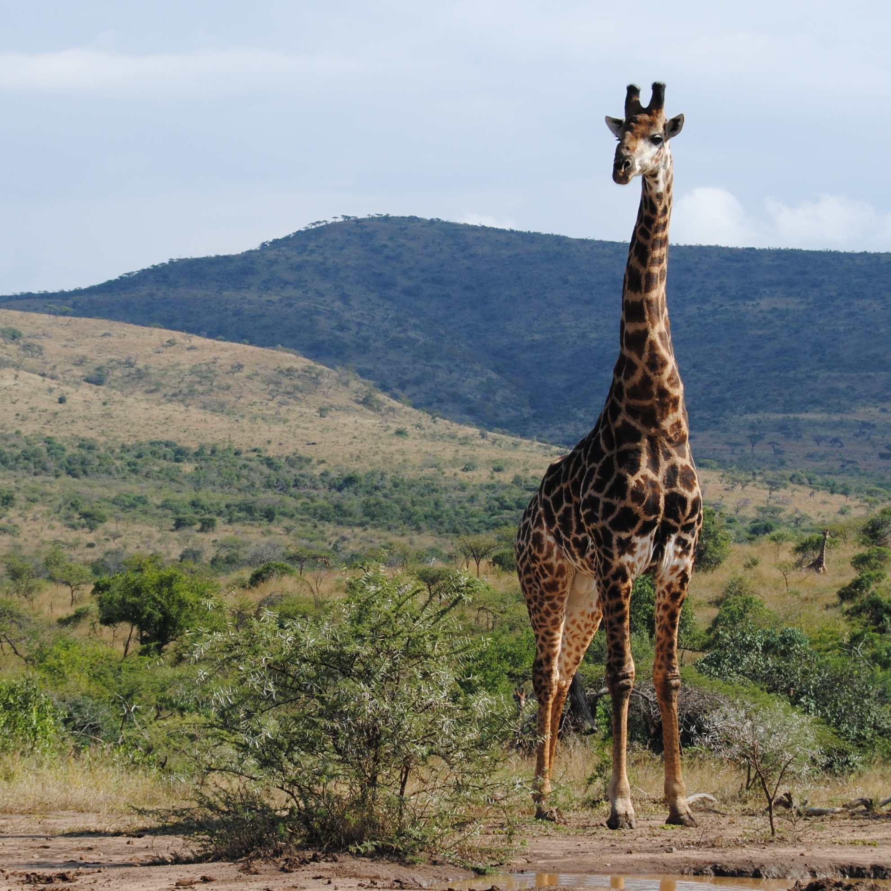
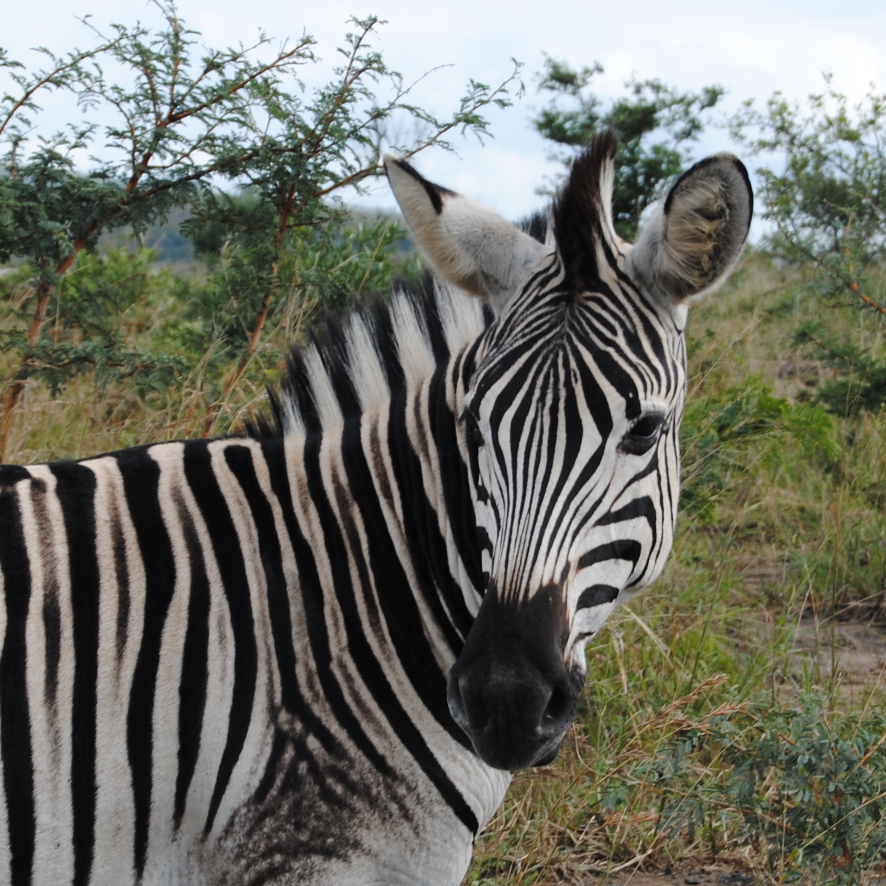

|
Carmen LongoProgrammerRight here you can read a long interesting description about all the super exciting stuff I do. There is a lot of this thing and some that too. See for yourself |
Here are some cute animals...
|

|
1998 - Penguins in Boulders beachThe African penguin (Spheniscus demersus), also known as the jackass penguin and black-footed penguin is a species of penguin, confined to southern African waters. It is also widely known as the "jackass" penguin for its donkey-like bray, although several related species of South American penguins produce the same sound. Like all extant penguins it is flightless, with a streamlined body, and wings stiffened and flattened into flippers for a marine habitat. |
|

|
2001 - Giraffe in Hluhluwe parkThe South African giraffe or Cape giraffe (Giraffa camelopardalis giraffa) is a subspecies of giraffe ranging from South Africa, Namibia, Botswana, Zimbabwe, Mozambique. It has rounded or blotched spots, some with star-like extensions on a light tan background, running down to the hooves. |
|

|
1984 - Zebras eating grassZebras are several species of African equids (horse family) united by their distinctive black and white striped coats. Their stripes come in different patterns, unique to each individual. They are generally social animals that live in small harems to large herds. Unlike their closest relatives, horses and donkeys, zebras have never been truly domesticated. |
About this page
This page has been coded during the FullStack program @LeWagon. That was probably the best experience of my entire life.